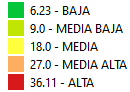

<!doctype html>
<html lang="en">
    <head>
        <meta charset="utf-8">
        <meta http-equiv="X-UA-Compatible" content="IE=edge">
        <meta name="viewport" content="initial-scale=1,user-scalable=no,maximum-scale=1,width=device-width">
        <meta name="mobile-web-app-capable" content="yes">
        <meta name="apple-mobile-web-app-capable" content="yes">
        <link rel="stylesheet" href="css/leaflet.css">
        <link rel="stylesheet" href="css/qgis2web.css"><link rel="stylesheet" href="css/fontawesome-all.min.css">
        <style>
        html, body, #map {
            width: 100%;
            height: 100%;
            padding: 0;
            margin: 0;
        }
        </style>
        <title></title>
    </head>
    <body>
        <div id="map">
        </div>
        <script src="js/qgis2web_expressions.js"></script>
        <script src="js/leaflet.js"></script>
        <script src="js/leaflet.rotatedMarker.js"></script>
        <script src="js/leaflet.pattern.js"></script>
        <script src="js/leaflet-hash.js"></script>
        <script src="js/Autolinker.min.js"></script>
        <script src="js/rbush.min.js"></script>
        <script src="js/labelgun.min.js"></script>
        <script src="js/labels.js"></script>
        <script src="data/INFRACCIONESaos19202122_2.js"></script>
        <script src="data/Parcelario_LH_sin_datos_3.js"></script>
        <script src="data/CALLES_DISUELTAS_4.js"></script>
        <script>
        var map = L.map('map', {
            zoomControl:true, maxZoom:28, minZoom:1
        }).fitBounds([[-32.86076439722051,-68.88002708836557],[-32.82103824737408,-68.79396665246388]]);
        var hash = new L.Hash(map);
        map.attributionControl.setPrefix('<a href="https://github.com/tomchadwin/qgis2web" target="_blank">qgis2web</a> &middot; <a href="https://leafletjs.com" title="A JS library for interactive maps">Leaflet</a> &middot; <a href="https://qgis.org">QGIS</a>');
        var autolinker = new Autolinker({truncate: {length: 30, location: 'smart'}});
        var bounds_group = new L.featureGroup([]);
        function setBounds() {
        }
        map.createPane('pane_GoogleSatelite_0');
        map.getPane('pane_GoogleSatelite_0').style.zIndex = 400;
        var layer_GoogleSatelite_0 = L.tileLayer('http://www.google.cn/maps/vt?lyrs=s@189&gl=cn&x={x}&y={y}&z={z}', {
            pane: 'pane_GoogleSatelite_0',
            opacity: 1.0,
            attribution: '',
            minZoom: 1,
            maxZoom: 28,
            minNativeZoom: 0,
            maxNativeZoom: 18
        });
        layer_GoogleSatelite_0;
        map.addLayer(layer_GoogleSatelite_0);
        map.createPane('pane_mapacaloraccidentesallyearsradio200copiar_1');
        map.getPane('pane_mapacaloraccidentesallyearsradio200copiar_1').style.zIndex = 401;
        var img_mapacaloraccidentesallyearsradio200copiar_1 = 'data/mapacaloraccidentesallyearsradio200copiar_1.png';
        var img_bounds_mapacaloraccidentesallyearsradio200copiar_1 = [[-32.874482571284105,-70.0529702218792],[-32.51410554754204,-68.7248267690194]];
        var layer_mapacaloraccidentesallyearsradio200copiar_1 = new L.imageOverlay(img_mapacaloraccidentesallyearsradio200copiar_1,
                                              img_bounds_mapacaloraccidentesallyearsradio200copiar_1,
                                              {pane: 'pane_mapacaloraccidentesallyearsradio200copiar_1'});
        bounds_group.addLayer(layer_mapacaloraccidentesallyearsradio200copiar_1);
        map.addLayer(layer_mapacaloraccidentesallyearsradio200copiar_1);
        function pop_INFRACCIONESaos19202122_2(feature, layer) {
            var popupContent = '<table>\
                    <tr>\
                        <th scope="row">Dirección accidente</th>\
                        <td>' + (feature.properties['address'] !== null ? autolinker.link(feature.properties['address'].toLocaleString()) : '') + '</td>\
                    </tr>\
                    <tr>\
                        <th scope="row">Fecha de acta</th>\
                        <td>' + (feature.properties['FECHA_LABR'] !== null ? autolinker.link(feature.properties['FECHA_LABR'].toLocaleString()) : '') + '</td>\
                    </tr>\
                    <tr>\
                        <th scope="row">LESIONADOS</th>\
                        <td>' + (feature.properties['LESIONADOS'] !== null ? autolinker.link(feature.properties['LESIONADOS'].toLocaleString()) : '') + '</td>\
                    </tr>\
                </table>';
            layer.bindPopup(popupContent, {maxHeight: 400});
        }

        function style_INFRACCIONESaos19202122_2_0() {
            return {
                pane: 'pane_INFRACCIONESaos19202122_2',
                radius: 2.0,
                opacity: 1,
                color: 'rgba(117,58,128,1.0)',
                dashArray: '',
                lineCap: 'butt',
                lineJoin: 'miter',
                weight: 2.0,
                fill: true,
                fillOpacity: 1,
                fillColor: 'rgba(149,74,162,1.0)',
                interactive: true,
            }
        }
        map.createPane('pane_INFRACCIONESaos19202122_2');
        map.getPane('pane_INFRACCIONESaos19202122_2').style.zIndex = 402;
        map.getPane('pane_INFRACCIONESaos19202122_2').style['mix-blend-mode'] = 'normal';
        var layer_INFRACCIONESaos19202122_2 = new L.geoJson(json_INFRACCIONESaos19202122_2, {
            attribution: '',
            interactive: true,
            dataVar: 'json_INFRACCIONESaos19202122_2',
            layerName: 'layer_INFRACCIONESaos19202122_2',
            pane: 'pane_INFRACCIONESaos19202122_2',
            onEachFeature: pop_INFRACCIONESaos19202122_2,
            pointToLayer: function (feature, latlng) {
                var context = {
                    feature: feature,
                    variables: {}
                };
                return L.circleMarker(latlng, style_INFRACCIONESaos19202122_2_0(feature));
            },
        });
        bounds_group.addLayer(layer_INFRACCIONESaos19202122_2);
        map.addLayer(layer_INFRACCIONESaos19202122_2);
        function pop_Parcelario_LH_sin_datos_3(feature, layer) {
            var popupContent = '<table>\
                    <tr>\
                        <td colspan="2">' + (feature.properties['FID'] !== null ? autolinker.link(feature.properties['FID'].toLocaleString()) : '') + '</td>\
                    </tr>\
                </table>';
            layer.bindPopup(popupContent, {maxHeight: 400});
        }

        function style_Parcelario_LH_sin_datos_3_0() {
            return {
                pane: 'pane_Parcelario_LH_sin_datos_3',
                opacity: 1,
                color: 'rgba(190,178,151,1.0)',
                dashArray: '',
                lineCap: 'butt',
                lineJoin: 'miter',
                weight: 1.0, 
                fill: true,
                fillOpacity: 1,
                fillColor: 'rgba(152,125,183,0.0)',
                interactive: true,
            }
        }
        map.createPane('pane_Parcelario_LH_sin_datos_3');
        map.getPane('pane_Parcelario_LH_sin_datos_3').style.zIndex = 403;
        map.getPane('pane_Parcelario_LH_sin_datos_3').style['mix-blend-mode'] = 'normal';
        var layer_Parcelario_LH_sin_datos_3 = new L.geoJson(json_Parcelario_LH_sin_datos_3, {
            attribution: '',
            interactive: true,
            dataVar: 'json_Parcelario_LH_sin_datos_3',
            layerName: 'layer_Parcelario_LH_sin_datos_3',
            pane: 'pane_Parcelario_LH_sin_datos_3',
            onEachFeature: pop_Parcelario_LH_sin_datos_3,
            style: style_Parcelario_LH_sin_datos_3_0,
        });
        bounds_group.addLayer(layer_Parcelario_LH_sin_datos_3);
        function pop_CALLES_DISUELTAS_4(feature, layer) {
            var popupContent = '<table>\
                    <tr>\
                        <td colspan="2">' + (feature.properties['NOMBRE'] !== null ? autolinker.link(feature.properties['NOMBRE'].toLocaleString()) : '') + '</td>\
                    </tr>\
                </table>';
            layer.bindPopup(popupContent, {maxHeight: 400});
        }

        function style_CALLES_DISUELTAS_4_0() {
            return {
                pane: 'pane_CALLES_DISUELTAS_4',
                opacity: 0.5,
                color: 'rgba(255,158,23,1.0)',
                dashArray: '',
                lineCap: 'square',
                lineJoin: 'bevel',
                weight: 4.0,
                fillOpacity: 0,
                interactive: true,
            }
        }
        map.createPane('pane_CALLES_DISUELTAS_4');
        map.getPane('pane_CALLES_DISUELTAS_4').style.zIndex = 404;
        map.getPane('pane_CALLES_DISUELTAS_4').style['mix-blend-mode'] = 'normal';
        var layer_CALLES_DISUELTAS_4 = new L.geoJson(json_CALLES_DISUELTAS_4, {
            attribution: '',
            interactive: true,
            dataVar: 'json_CALLES_DISUELTAS_4',
            layerName: 'layer_CALLES_DISUELTAS_4',
            pane: 'pane_CALLES_DISUELTAS_4',
            onEachFeature: pop_CALLES_DISUELTAS_4,
            style: style_CALLES_DISUELTAS_4_0,
        });
        bounds_group.addLayer(layer_CALLES_DISUELTAS_4);
        var baseMaps = {};
        L.control.layers(baseMaps,{' Calles': layer_CALLES_DISUELTAS_4,' Parcelario': layer_Parcelario_LH_sin_datos_3,' Accidentes años 2019 al 2022': layer_INFRACCIONESaos19202122_2,'Densidad de accidentes años 2019 al 2022<br><br/>': layer_mapacaloraccidentesallyearsradio200copiar_1,"Google Satelite": layer_GoogleSatelite_0,},{collapsed:false}).addTo(map);
        map.on("zoomend", function(){

                if (map.hasLayer(layer_CALLES_DISUELTAS_4)) {
                    if (map.getZoom() <= 15 && map.getZoom() >= 19) {
                        layer_CALLES_DISUELTAS_4.eachLayer(function (layer) {
                            layer.openTooltip();
                        });
                    } else {
                        layer_CALLES_DISUELTAS_4.eachLayer(function (layer) {
                            layer.closeTooltip();
                        });
                    }
                }
        });
        setBounds();
                if (map.hasLayer(layer_CALLES_DISUELTAS_4)) {
                    if (map.getZoom() <= 15 && map.getZoom() >= 19) {
                        layer_CALLES_DISUELTAS_4.eachLayer(function (layer) {
                            layer.openTooltip();
                        });
                    } else {
                        layer_CALLES_DISUELTAS_4.eachLayer(function (layer) {
                            layer.closeTooltip();
                        });
                    }
                }
        L.ImageOverlay.include({
            getBounds: function () {
                return this._bounds;
            }
        });
        resetLabels([layer_CALLES_DISUELTAS_4]);
        map.on("zoomend", function(){
            resetLabels([layer_CALLES_DISUELTAS_4]);
        });
        map.on("layeradd", function(){
            resetLabels([layer_CALLES_DISUELTAS_4]);
        });
        map.on("layerremove", function(){
            resetLabels([layer_CALLES_DISUELTAS_4]);
        });
        </script>
    </body>
</html>
